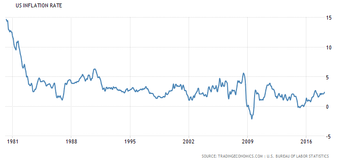
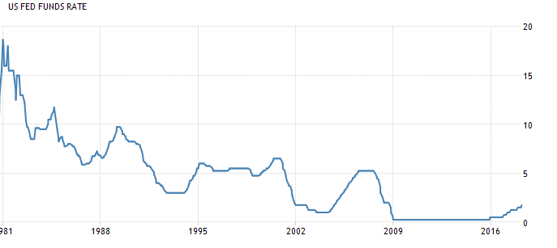
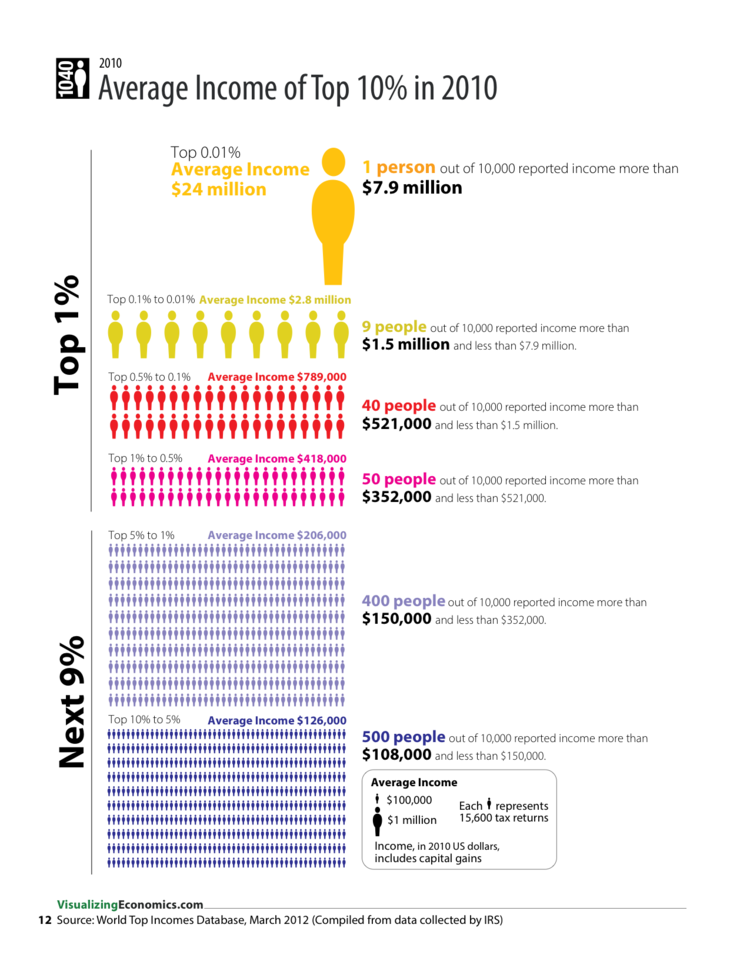

Data visualization dates back to the 17th century where humans started using maps, graphs and pie charts. One of the most famous first uses of visualization was Charles Minard’s mapping of Napoleon’s invasion of Russia. Visualization was only in it’s infancy then, the computer revolution truly lit the fire under data visualization.
Visualization is very important when trying to construct a representation of one’s research. Economists are diving deep into how they can make compelling arguments with presenting a visual representation of their research.
The graph above presents the value of gold compared to the percentage of inflation. The visualization was very important when the creator was thinking about constructing the graph. Instead of listing the numbers, it's smart to visualize this as a graph so the human eye can easily follow the correlation and come to the same conclusion. They proved their point by showing a correlation between inflation rates and the price in gold. As inflation rises, so does the price of gold.
Some schools of economic thought, like the Austrians, believe that lowering interest rates and increase in money supply (inflation) have a relationship. The two graphs demonstrate that they follow a similar trend line and therefore have some correlation.


When comparing population percentages for wealth inequality, the following visual below does a great job at quantifying this. Showing the physical representation of the dataset leaves an impact on the reader and helps the visualize just how incredible the numbers are for that population.
